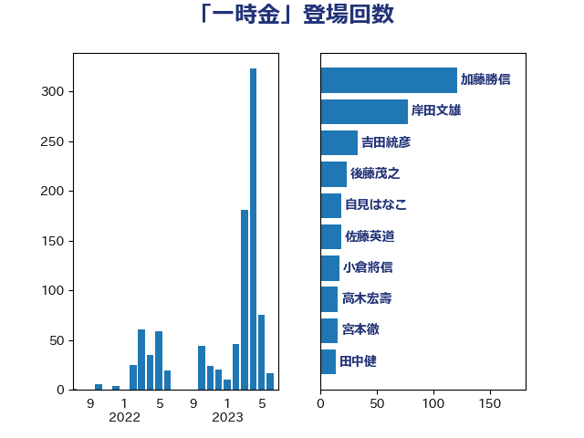

単語「一時金」

| 菅義偉 | 自由民主党 | 50 回 |
| 西村康稔 | 自由民主党 | 35 回 |
| 後藤茂之 | 自由民主党 | 25 回 |
| 吉田統彦 | 立憲民主党 | 21 回 |
| 梅村聡 | 日本維新の会 | 21 回 |
| 岸田文雄 | 自由民主党 | 15 回 |
| 田村憲久 | 自由民主党 | 15 回 |
| 梶山弘志 | 自由民主党 | 14 回 |
| 浅野哲 | 国民民主党 | 11 回 |
| 杉尾秀哉 | 立憲民主党 | 9 回 |
| 山井和則 | 立憲民主党 | 8 回 |
| 後藤祐一 | 立憲民主党 | 8 回 |
| 野田聖子 | 自由民主党 | 7 回 |
| 坂本哲志 | 自由民主党 | 6 回 |
| 小倉將信 | 自由民主党 | 6 回 |
| 阿部知子 | 立憲民主党 | 6 回 |
| 音喜多駿 | 日本維新の会 | 6 回 |
| 岸真紀子 | 立憲民主党 | 5 回 |
| 石井啓一 | 公明党 | 5 回 |
| 笠井亮 | 日本共産党 | 5 回 |
| 蓮舫 | 立憲民主党 | 5 回 |
| 佐々木紀 | 自由民主党 | 4 回 |
| 佐藤英道 | 公明党 | 4 回 |
| 吉川元 | 立憲民主党 | 4 回 |
| 大口善徳 | 公明党 | 4 回 |
| 山添拓 | 日本共産党 | 4 回 |
| 福島みずほ | 社会民主党 | 4 回 |
| 竹内譲 | 公明党 | 4 回 |
| 長妻昭 | 立憲民主党 | 4 回 |
| 高木かおり | 日本維新の会 | 4 回 |
| 古屋範子 | 公明党 | 3 回 |
| 宮本徹 | 日本共産党 | 3 回 |
| 小池晃 | 日本共産党 | 3 回 |
| 山下芳生 | 日本共産党 | 3 回 |
| 山口那津男 | 公明党 | 3 回 |
| 打越さく良 | 立憲民主党 | 3 回 |
| 玄葉光一郎 | 立憲民主党 | 3 回 |
| 西岡秀子 | 国民民主党 | 3 回 |
| 赤澤亮正 | 自由民主党 | 3 回 |
| 鎌田さゆり | 立憲民主党 | 3 回 |
| 麻生太郎 | 自由民主党 | 3 回 |
| 三浦信祐 | 公明党 | 2 回 |
| 倉林明子 | 日本共産党 | 2 回 |
| 和田政宗 | 自由民主党 | 2 回 |
| 国光あやの | 自由民主党 | 2 回 |
| 塩川鉄也 | 日本共産党 | 2 回 |
| 塩村あやか | 立憲民主党 | 2 回 |
| 小沢雅仁 | 立憲民主党 | 2 回 |
| 山本香苗 | 公明党 | 2 回 |
| 山田勝彦 | 立憲民主党 | 2 回 |
| 枝野幸男 | 立憲民主党 | 2 回 |
| 田名部匡代 | 立憲民主党 | 2 回 |
| 神津たけし | 立憲民主党 | 2 回 |
| 稲津久 | 公明党 | 2 回 |
| 自見はなこ | 自由民主党 | 2 回 |
| 赤羽一嘉 | 公明党 | 2 回 |
| 逢坂誠二 | 立憲民主党 | 2 回 |
| 鈴木俊一 | 自由民主党 | 2 回 |
| 中野洋昌 | 公明党 | 1 回 |
| 加田裕之 | 自由民主党 | 1 回 |
| 城井崇 | 立憲民主党 | 1 回 |
| 奥野総一郎 | 立憲民主党 | 1 回 |
| 安江伸夫 | 公明党 | 1 回 |
| 宗清皇一 | 自由民主党 | 1 回 |
| 小渕優子 | 自由民主党 | 1 回 |
| 山本博司 | 公明党 | 1 回 |
| 山田賢司 | 自由民主党 | 1 回 |
| 岡本あき子 | 立憲民主党 | 1 回 |
| 平木大作 | 公明党 | 1 回 |
| 志位和夫 | 日本共産党 | 1 回 |
| 末松義規 | 立憲民主党 | 1 回 |
| 本村伸子 | 日本共産党 | 1 回 |
| 柚木道義 | 立憲民主党 | 1 回 |
| 森屋隆 | 立憲民主党 | 1 回 |
| 榛葉賀津也 | 国民民主党 | 1 回 |
| 横沢高徳 | 立憲民主党 | 1 回 |
| 江田憲司 | 立憲民主党 | 1 回 |
| 玉木雄一郎 | 国民民主党 | 1 回 |
| 田嶋要 | 立憲民主党 | 1 回 |
| 田村まみ | 国民民主党 | 1 回 |
| 田村智子 | 日本共産党 | 1 回 |
| 白石洋一 | 立憲民主党 | 1 回 |
| 矢倉克夫 | 公明党 | 1 回 |
| 石川博崇 | 公明党 | 1 回 |
| 福山哲郎 | 立憲民主党 | 1 回 |
| 竹谷とし子 | 公明党 | 1 回 |
| 美延映夫 | 日本維新の会 | 1 回 |
| 舞立昇治 | 自由民主党 | 1 回 |
| 舩後靖彦 | れいわ新選組 | 1 回 |
| 芳賀道也 | 国民民主党 | 1 回 |
| 西村智奈美 | 立憲民主党 | 1 回 |
| 赤池誠章 | 自由民主党 | 1 回 |
| 道下大樹 | 立憲民主党 | 1 回 |
| 野田佳彦 | 立憲民主党 | 1 回 |
| 鈴木敦 | 国民民主党 | 1 回 |
| 阿部司 | 日本維新の会 | 1 回 |
| 高橋千鶴子 | 日本共産党 | 1 回 |